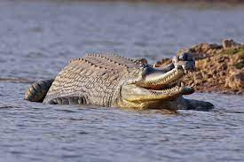

Location : Uttarkashi District of Uttarakhand
Established in : 1989
Area : 2390 km2 Flora : The park harbors Western Himalayan subalpine conifer forests at lower elevations and Western
Himalayan alpine shrub and meadows at higher elevations. Vegetation consist of chirpine deodar, fir, spruce, oak and
rhododendrons.
Fauna : Gangotri National Park is home to the snow leopard. To date, 15 mammal species and 150 bird species
have been documented in the park, including Asian black bear, brown bear, musk deer, blue sheep, Himalayan tahr, Himalayan
monal, Koklass and Himalayan snowcock, pheasants, partridges, doves, and pigeons.
Features : Gaumukh at Gangotri glacier, the origin of river Ganga, is located inside the park.
Gangotri National Park
Musk deer
Himalayan brown bear
Govind Pashu Vihar National Park
Location : Uttarkashi district
Established in : 1955
Area : 958 km2 Flora : The park contains western Himalayan broadleaf forests at its lowest elevations, transitioning to
western Himalayan subalpine conifer forests and western Himalayan alpine shrub and meadows at its highest elevations. Trees
present in the lower parts of the sanctuary include chir pine, deodar cedar, oak and other deciduous species. At altitudes
over about 2,600 m (8,500 ft), common species include conifers such as blue pine, silver fir, spruce, yew, and deciduous
species such as oak, maple, walnut, horse chestnut, hazel and rhododendron.
Fauna : Snow leopard, Asian black bear, the brown bear, the common leopard, the musk deer, the bharal, the
Himalayan tahr and the serow.[9] Smaller mammals include the Indian crested porcupine, European otter, goral, civet, hedgehog,
Himalayan field rat, Hodgson's giant flying squirrel, wild boar, masked palm civet and Sikkim mountain vole. Birds found are
the golden eagle, the steppe eagle and the black eagle, the bearded vulture, the Himalayan snowcock, the Himalayan monal
pheasant, the cheer pheasant and the western tragopan. Smaller birds include owls, pigeons, minivets, thrushes, warblers,
bulbuls, parakeets, cuckoos, tits, buntings and finches.
Features :
Govind Pashu Vihar National Park
European otter
Hedgehog
Jim Corbett National Park
Location : Nainital district of Uttarakhand
Established in : 1936
Area : 520.8 km2 Flora : A total of 488 different species of plants have been recorded in the park. Tree density inside the
reserve is high in the areas of Sal forests.
Fauna : More than 586 species of resident and migratory birds have been categorised, including the crested
serpent eagle, blossom-headed parakeet and the red junglefowl — ancestor of all domestic fowl. 33 species of reptiles, seven
species of amphibians, seven species of fish and 36 species of dragonflies have also been recorded.
Leopard, jungle cat, leopard cat, fishing cat, barking deer, sambar deer, hog deer, chital, Indian elephant, sloth and
Himalayan black bears, Indian grey mongoose, otters, yellow-throated martens, Himalayan goral, Indian pangolins, and langur and
rhesus macaques. Owls and nightjars are heard at night. Indian python, crocodiles and gharials are also found.
Features : The first national park in India
Jim Corbett National Park
Crested serpent eagle

Gharial
Nanda Devi National Park
Location : Around the peak of Nanda Devi (7816 m) in Chamoli Garhwal district of Uttarakhand
Established in : 1982
Area : 630.33 km2 Flora : Nanda Devi National Park is home to a wide variety of flora. Some 312 floral species that include 17
rare species have been found here. Fir, birch, rhododendron and juniper are the main flora. Vegetation is scarce In the inner
sanctuary due to the dryness of the conditions. One will not find vegetation near Nanda Devi Glacier. Ramani, alpine, prone
mosses and lichens are other notable floral species found in Nanda Devi National Park.
Fauna : Common larger mammals are Himalayan musk deer, mainland serow and Himalayan tahr. Goral are not
found within, but in the vicinity of the park. Carnivores are represented by snow leopard, Himalayan black bear and perhaps
also brown bear. Langurs are found within the park, whereas rhesus macaque are known to occur in the neighboring areas of the
park. In a scientific expedition in 1993, a total of 114 bird species was recognized.
Features : UNESCO World Heritage Site
Nanda Devi National Park
Snow leopard
Langur
Rajaji National Park
Location : encompasses the Shivaliks, near the foothills of the Himalayas
Established in : 1983
Area : 820 km2 Flora : Broadleaved deciduous forests, riverine vegetation, scrubland, grasslands and pine forests form the
range of flora in this park
Fauna : Chital, nilgai, Asian elephant, Bengal tiger, Indian Leopard, striped hyena, jungle cat, goral, Indian
hare, sloth bear, Himalayan black bear, king cobra, jackal, barking deer, sambhar, wild boar, rhesus macaque, Indian langur,
Indian porcupine, monitor lizard, python
Features : Rajaji became the second tiger reserve in Uttarakhand in April 2015.
Rajaji National Park
Indian hare
Himalayan black bear
Valley of Flowers National Park
Location : North Chamoli and Pithoragarh, in the state of Uttarakhand
Established in : 1980
Area : 87.50 km2 Flora : The valley has three types of sub-alpine zones as follows: foothills alpine between 3,200 m and 3,500
m which is the upper height limit for trees, lower alpine between 3,500 m and 3,700 m, and higher alpine above 3,700 m. Flowers
mostly orchids, poppies, primulas, marigold, daisies and anemones carpet the ground.
Fauna : Red giant flying squirrel, Himalayan black bear, red fox, Himalayan weasel, yellow-throated marten, gray
langur, goral, musk deer, spotted chevrotain, Himalayan tahr, serow, bharal, blue sheep, snow leopard, common leopard, brown
bear, high altitute lizard, Himalayan ground skink, Himalayan pit viper, wild bees, butterflies, etc.
Birds are snow pigeon, spotted dove, scaly-bellied and yellownape woodpeckers, great and blue-throated barbets, yellow-billed
and red-billed choughs, koklass pheasant, rhododendron thickets, etc.